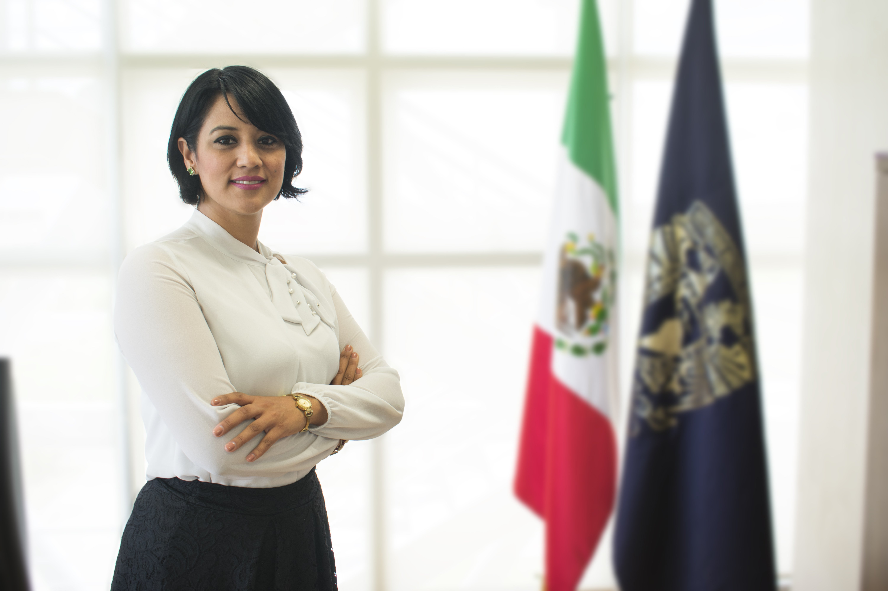

<main>
  <div class="position-relative">
    <!-- Hero for FREE version -->
    <section class="section section-lg section-hero section-shaped">
      <!-- Background circles -->
      <div class="shape shape-style-1 shape-unam-azul">
        <span class="span-150"></span>
        <span class="span-50"></span>
        <span class="span-50"></span>
        <span class="span-75"></span>
        <span class="span-100"></span>
        <span class="span-75"></span>
        <span class="span-50"></span>
        <span class="span-100"></span>
        <span class="span-50"></span>
        <span class="span-100"></span>
      </div>

      <div class="container shape-container d-flex align-items-center py-lg">

        <div class="col px-0">


          <div class="row align-items-center justify-content-center">
            
            <div class="col-lg-8 align-items-center text-center">
              <span class="display-3 text-unam-oro">
                Congreso Virtual Internacional de Innovación y Equidad Educativa. Una visión integradora desde las IES.
              </span>
              <br><br><br>
              <h1 class="display-3 text-unam-oro">
                ENES Unidad León, UNAM
              </h1>
              <!-- <h1 class="display-3 text-unam-oro">ENES Unidad León, UNAM
                <span>Congreso Virtual Internacional de innovación y equidad educativa. Una visión integradora desde las
                  IES.</span>
              </h1> -->
            </div>
            <br>
          </div>
          <div class="row align-items-center justify-content-center text-center">
            
            <div class="col-lg-8 text-white">
              <h2 class="text-white">
                Fechas del congreso: 17, 18 y 19 de febrero de 2021
                <h4>
                  <a class="text-white" style="text-decoration: underline;s" href="#fechas">más fechas importantes</a>

                </h4>
              </h2>
              <h4 class="text-white">
              </h4>
              <!-- Fechas importantes
               -->
            </div>
            
          </div>
          <br>


          <!-- img ppal -->
          <div class="row align-items-center justify-content-center">
            <div class="">

              <div style="width: 100%;">
                <div style="position: relative; padding-bottom: 50.00%; padding-top: 0; height: 0;">
                  <iframe width="1120" height="630" src="https://www.youtube.com/embed/VgrarA4Xmak" frameborder="0"
                    allow="accelerometer; autoplay; clipboard-write; encrypted-media; gyroscope; picture-in-picture"
                    allowfullscreen></iframe>

                </div>
              </div>

            </div>
            <br><br>
          </div>

          <!-- <div class="row align-items-center justify-content-center">
            <div class="col-lg-4">
              
            </div>

            <div class="col-lg-8 text-white">
              <p>La Escuela Nacional de Estudios Superiores, Unidad León, de la Universidad Nacional Autónoma de México,
                UNAM, tiene el privilegio de proponer este congreso, con la intención de crear un espacio de diálogo e
                intercambio de experiencias e innovación educativa. Es nuestro deseo que puedan compartirse hallazgos y
                logros producto de investigaciones o trabajos de intervención, desde las diferentes dimensiones y
                latitudes, circunscritas a la calidad educativa de las instituciones de educación superior, como
                referentes ineludibles de la responsabilidad social que les distingue.</p>
              <p>Pretendemos que este evento se constituya en un parteaguas para promover el intercambio e impulso de
                proyectos interdisciplinarios y transdisciplinarios, comprometidos social y ambientalmente, con
                instituciones hermanas, traspasando fronteras con países de habla hispana. </p>
              <p>Con este espíritu, les doy la más cordial bienvenida, deseando a la distancia, y amparados por el calor
                humano, que se cubran las expectativas y que ello nos permita contribuir al fortalecimiento de la
                docencia de nuestros países, con miras hacia un mundo mejor. </p>
            </div>
            <br><br>
          </div> -->
          <br>
        </div>
      </div>
      <!-- SVG separator -->
      <div class="separator separator-bottom separator-skew zindex-100">
        <svg x="0" y="0" viewBox="0 0 2560 100" preserveAspectRatio="none" version="1.1"
          xmlns="http://www.w3.org/2000/svg">
          <polygon class="fill-white" points="2560 0 2560 100 0 100"></polygon>
        </svg>
      </div>
    </section>


    <br>
    <marquee class="fondo">
      2021, Febrero 17, 18 y 19 |

      Miércoles 17. CONFERENCIAS MAGISTRALES...
      Luciano Concheiro Bórquez 
      Marion Whitney Lloyd 
      Julio Ruiz Palmero 
      | PONENCIAS MAGISTRALES...
      Rocío Grageda Kuri 
      Melchor Gómez García 
      Juan Manuel Trujillo Torres 

      | Jueves 18. CONFERENCIAS MAGISTRALES...
      Javier de la Fuente Hernández 
      Slaymen Bonilla Núñez 
      Verónica Marín Díaz 
      | PONENCIAS MAGISTRALES...
      Laura Susana Frade Rubio 
      Ernesto Colomo Magaña 
      Enrique Sánchez Rivas 

      | Viernes 19. CONFERENCIAS MAGISTRALES...
      Melchor Sánchez Mendiola 
      Camilo Ayala Ochoa 
      Ivory Magallón de Lugo 
      | PONENCIAS MAGISTRALES...
      María Concepción Barrón Tirado 
      Teresa Guasch Pascual 
      Patricia Kent 

    </marquee>


    <app-virtual></app-virtual>


    <app-fechas></app-fechas>


  </div>


  <!-- <br><br><br><br><br>
    <app-conferencias></app-conferencias> -->

  <!-- <app-sections></app-sections> -->
  <!-- <br><br><br><br><br>
    
    <app-ejes2></app-ejes2>
    <br><br><br><br><br>
    
    <app-programa></app-programa>
    <br><br><br><br><br>
    
    <app-comite></app-comite>
    <br><br><br><br><br>
    
    <app-presentadores></app-presentadores>
    <br><br><br><br><br> -->

</main>